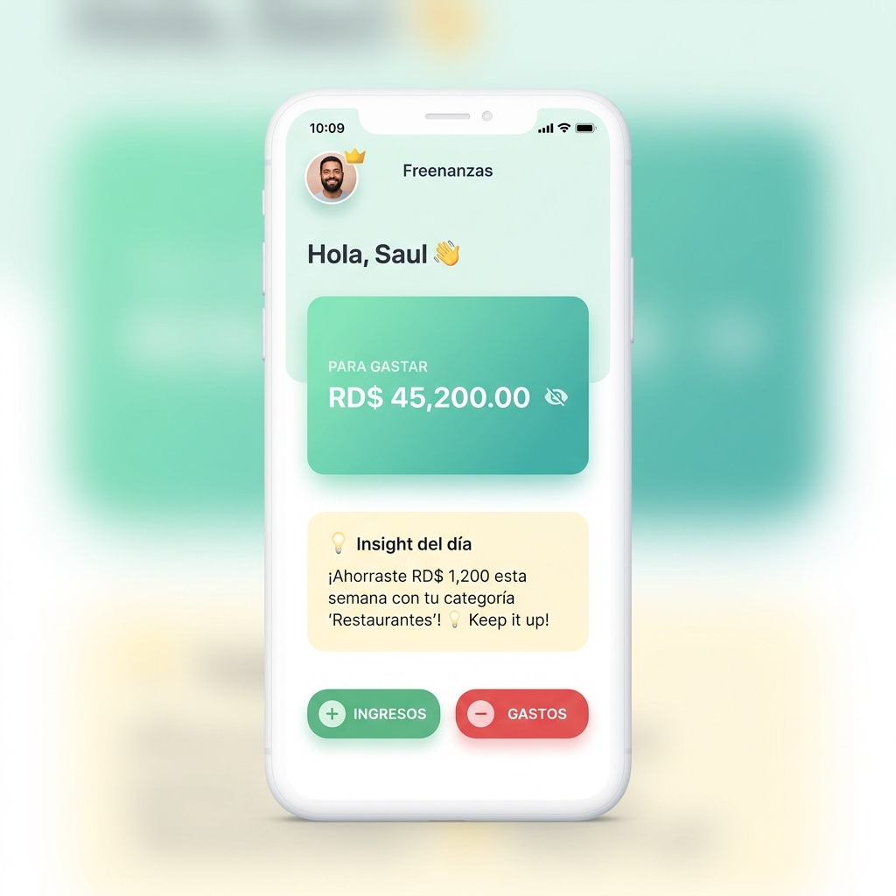
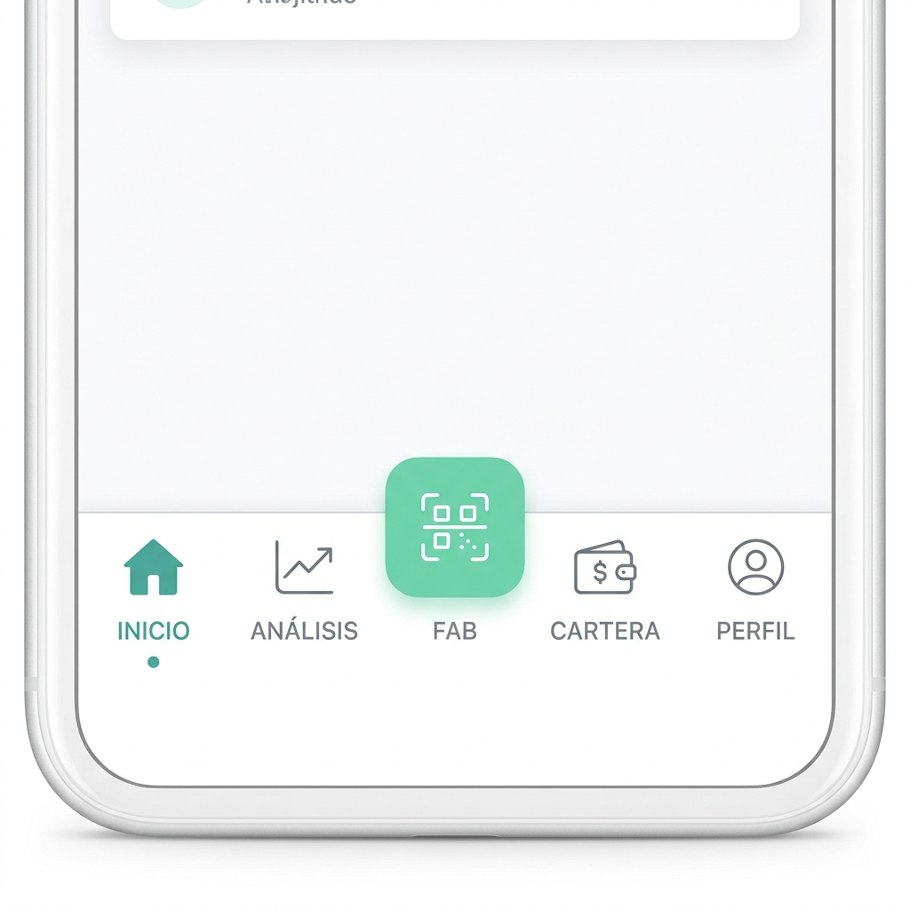

Freenanzas APP
Guía de usuario paso a paso e instructivo de libertad financiera personal
2. Bienvenida
¡Hola! Te damos la más cálida bienvenida a Freenanzas APP, tu nuevo planificador financiero personal. Sabemos que gestionar el dinero puede parecer complicado. Por eso hemos diseñado una aplicación amigable, simple y optimista para ayudarte a tomar el control de tus finanzas personales sin estrés.
Bajo la regla del ahorro conductual y con el apoyo de nuestra Inteligencia Artificial (IA), Freenanzas te ayuda a entender exactamente a dónde va tu dinero y te enseña a crear hábitos de ahorro sólidos en tu moneda local (RD$).
3. Instalación y Acceso
Configurar tu cuenta en Freenanzas es sumamente rápido. Una vez abras la aplicación:
- Onboarding Inicial: Verás las pantallas de introducción explicando los presupuestos inteligentes, la regla 50/30/20 y tus metas de ahorro.
- Elige tu método de acceso:
- Google Sign-In: Entra en un clic con tu cuenta de Google.
- Registro por Correo: Selecciona "Registrarse", escribe tu nombre, correo y contraseña.
- Inicio de sesión: Para volver a ingresar, digita tu correo y contraseña en la pestaña de inicio de sesión.
- Permisos: Permite que la app acceda a tu cámara para poder escanear recibos físicos con la IA.

4. Pantalla Principal (Dashboard)

El Dashboard es tu centro de control diario. Está organizado de forma visual para evitar el estrés y darte claridad:
- Disponible "Para Gastar": Te muestra tu dinero libre después de descontar gastos fijos y ahorros.
- Fondo "Mis Ahorros": Muestra lo que has separado de forma segura.
- Ocultar Monto (👁️): Pulsa el ojo junto al saldo para esconder la cantidad en público.
- Insight del Día: Consejos de IA amigables que analizan tus finanzas semanales en tiempo real.
- Acciones Rápidas (+ y -): Botones inferiores en color verde y rojo para agregar ingresos o gastos en segundos.
5. Menú de Navegación
Para moverte por la app, utiliza el dock inferior redondeado y accesible:
| Tab / Icono | Nombre | Función Principal |
|---|---|---|
| home | INICIO | Te lleva al dashboard de tus saldos principales e insights. |
| pie_chart | ANÁLISIS | Reportes mensuales, flujo de caja y progreso de tus metas de ahorro. |
| qr_code_scanner | FAB CENTRAL 📷 | Botón flotante verde de la cámara para escanear recibos al instante. |
| account_balance | CARTERA | Historial detallado de todas tus transacciones. |
| person | PERFIL | Ajustes de cuenta, deudas, tarjetas de crédito y soporte. |

6. Funciones Principales (Paso a Paso)
6.1. Registro de Gastos e Ingresos

Mantener tus cuentas al día es vital. Freenanzas te lo pone muy fácil:
Método Escáner IA (Exclusivo PRO):
- Pulsa el botón de la Cámara/Escáner.
- Captura una foto nítida de tu factura física.
- La IA analizará el papel y rellenará por ti: el monto total, el comercio (y su RNC), la fecha y te sugerirá la categoría adecuada.
- Revisa y pulsa Guardar.
Método Manual:
- Elige Gasto o Ingreso.
- Escribe la cifra en RD$.
- Selecciona una categoría (Comida, Servicios, Renta, etc.) y pulsa Guardar.
6.2. Filtro IA Preventivo (Anticaprichos)
El Filtro IA es una herramienta innovadora de economía conductual. Úsalo antes de comprar algo de lo que no estés seguro:
- Introduce el nombre del producto y su costo (ej. Tenis deportivos, RD$ 5,800).
- Selecciona del 1 al 10 qué tanto deseas el producto en ese momento.
- La IA evalúa al instante tu balance mensual real, tus próximas deudas, cuotas de préstamos y tu meta de ahorro activa.
- Te entregará una recomendación semáforo con un tono amigable pero honesto:
- Adelante 🟢 Está dentro de tus posibilidades y no afecta tus metas.
- Piénsalo 🟡 Un gasto extra que retrasará un poco tu fondo.
- Alerta 🔴 Te arriesga a comprometer tus gastos fijos indispensables.

6.3. Análisis de Presupuestos y Metas de Ahorro

Lleva el control de tus objetivos financieros organizando tu dinero:
- Regla 50/30/20: Clasifica tus gastos en necesidades, caprichos y tu ahorro indispensable.
- Flujo de Caja: Observa la barra tricolor dinámica para identificar rápidamente el balance de tus gastos (rojo) frente a tus ahorros (indigo).
- Metas de Ahorro (ej. Fondo de Emergencia): Crea tus objetivos escribiendo cuánto necesitas. Freenanzas te dirá el monto ideal mensual. Al registrar transferencias bajo "Ahorro", verás el progreso porcentual completarse paso a paso.
6.4. Perfil y Ajustes Financieros
Configura todas las utilidades adicionales en tu perfil:
- Administrar Tarjetas de Crédito: Introduce tu fecha de corte y límites. La app te dirá cuándo pagar y evitará el pago de altos intereses financieros.
- Administrar Deudas: Haz un mapa de tus préstamos con amortizaciones mensuales calculadas.
- Ajustes de alertas: Configura avisos diarios para no olvidar registrar tus movimientos.

7. Consejos y Buenas Prácticas Financieras
Para sacarle el máximo partido a tu Freenanzas APP y lograr tu libertad financiera rápido, adopta estos sencillos hábitos:
- Registra los gastos hormiga: La menta, el café o el parqueo... registrar lo pequeño es la clave para tapar fugas de dinero importantes.
- Consulta al Filtro IA primero: Deja pasar al menos 10 minutos entre tu deseo de compra impulsiva y la consulta al Filtro IA. Esta pausa ayuda a tu cerebro a razonar el gasto de forma lógica.
- Separa tu ahorro el primer día: Tan pronto recibas tu sueldo o ingresos, regístralo y separa el 10% o 20% para tu fondo. Si dejas el ahorro para lo que te "sobre" al final del mes, nunca te sobrará nada.
8. Preguntas Frecuentes (FAQ)
| Pregunta / Inconveniente | Causa Frecuente | Solución |
|---|---|---|
| No me carga la pestaña de escaneo con cámara | No has concedido permisos de cámara en tu celular. | Ve a los ajustes de tu teléfono, busca Freenanzas y activa los permisos de cámara. |
| ¿Cómo se calcula el Insight diario? | La IA analiza tus tendencias de consumo en base a las categorías que más utilizas. | A mayor cantidad de transacciones registradas de forma correcta, más preciso será el consejo financiero diario. |
| El escáner no extrae los datos correctamente | Factura arrugada, luz tenue o foto de lado. | Estira la factura sobre una superficie plana, toma la foto vertical y con luz natural o flash. |
| ¿La versión PRO es obligatoria? | El plan free cuenta con las funciones básicas del dashboard. | La suscripción PRO activa el análisis ilimitado por IA, alertas inteligentes avanzadas y escaneo de facturas. |
9. Soporte y Contacto
¿Tienes dudas o deseas dar feedback? Nuestro equipo técnico de República Dominicana está disponible para asistirte:
- Correo Oficial: soporte@freenanzas.com
- Horario: Lunes a Viernes de 8:00 AM a 6:00 PM (GMT-4, Hora RD)
- Al reportar, indícanos: Tu correo electrónico registrado, modelo de celular y una breve explicación del caso (puedes enviar fotos adjuntas).